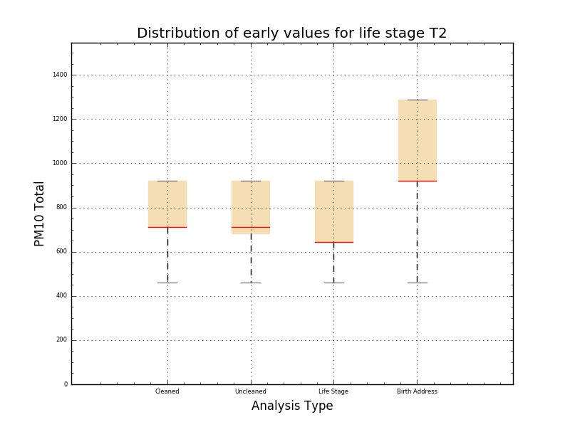
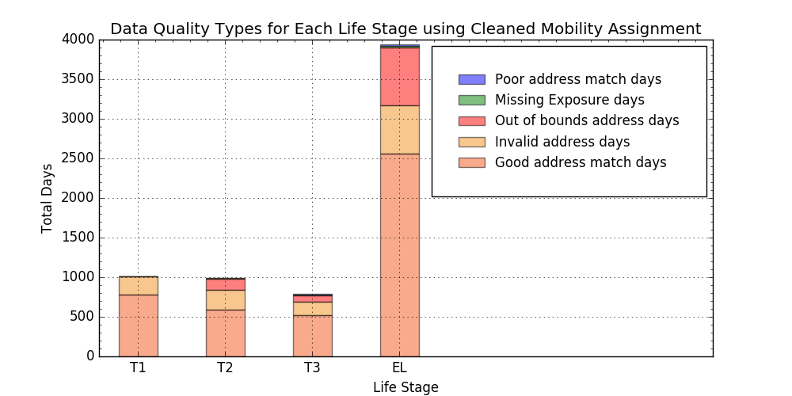
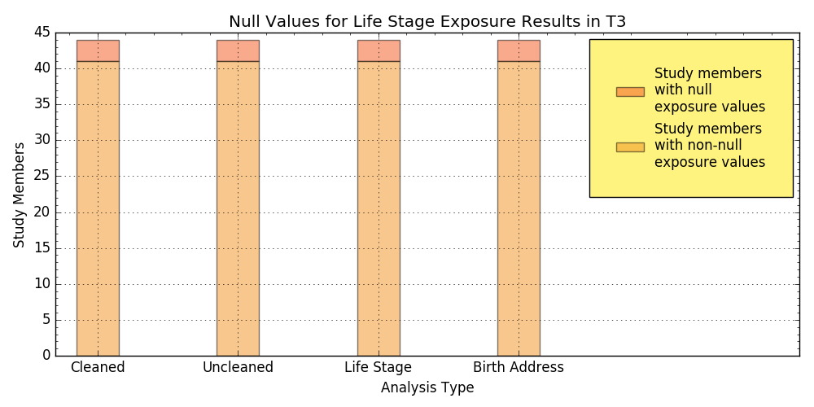
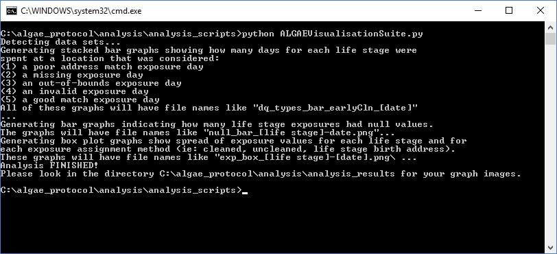

Run the ALGAE Visualisation Suite
by Kevin Garwood
The ALGAE Visualisation Suite is a script that you can run to generate a variety of graph images that are based on the data sets that are created by the ALGAE Protocol. The program, written in Python, reads all of the exposure CSV files and uses them to create the following kinds of graphs:- Data quality graphs: these show stacked bar charts that quantify the number of days in a given life stage that are can be characterised as: poor match exposure days, invalid exposure days, out-of-bounds exposure days, missing exposure days and good match exposure days
- Null exposure graphs: these show stacked bar charts showing the number of study members who had either null or non-null values for exposures in a given life stage. Each image includes stacked bar charts for each type of relevant exposure assignment method (cleaned, uncleaned, life stage and birth address)
- Exposure box plot graphs: these show the distribution of exposure values for all study members for a given life stage. Each image features a box plot for each relevant exposure assignment method.
Currently the scripts are designed to generate results for the PM10 Total
pollutant, and some graphs will use the pm10_tot_sum values.
Example Outputs
The script produces graphs such as these:



Setup Environment
To run the script, ensure you have installed Python 2.7. Ensure that when you open a command line window, you can type "python" anywhere. In order to do that, add the path to python's windows application to your Windows Path environment variable. On Windows 10, you would add the path as follows:- Right click on the Start icon in the lower-left hand corner (the picture is of a square divided into four little squares) and choose "Control Panel"
- Click the "System" panel
- In the left side, you'll see a number of options. Click on "Advanced system settings"
- The "System Properties" dialog should appear. Click the button "Environment variables ..."
-
The "Environment Variables" dialog should appear. In the lower part of the dialog,
under "System variables", edit the
Pathvariable. -
Add the directory that will contain the file
python.exe. For example, that may beC:\Python27. Now save the changes and open a new command line window. - Navigate to any other directory and type "python". If it works, the last line should now be ">>>". Type Ctrl + C to quit out of Python.
Run the Script
Let's assume that you have unzipped algae_protocol.zip and you now have a folder at C:\algae_protocol.- Before you run this script, run the ALGAE Protocol so that it will produce results.
-
Navigate to where the main python script is and type
python ALGAEVisualisationSuite.py. In our example installation, it would look something like this:  -
Now open
C:\algae_protocol\analysis\analysis_resultsand you should see the auto-generated graph image files.
Changing Input and Output Directories of Script
If you want to change the default locations for where the script scans for data files and where it generates the graphs, you may run the script by typing something like this instead:
python ALGAEVisualisationSuite.py -inputDirectory C:\myALGAEProject -outputDirectory C:\final_graphs